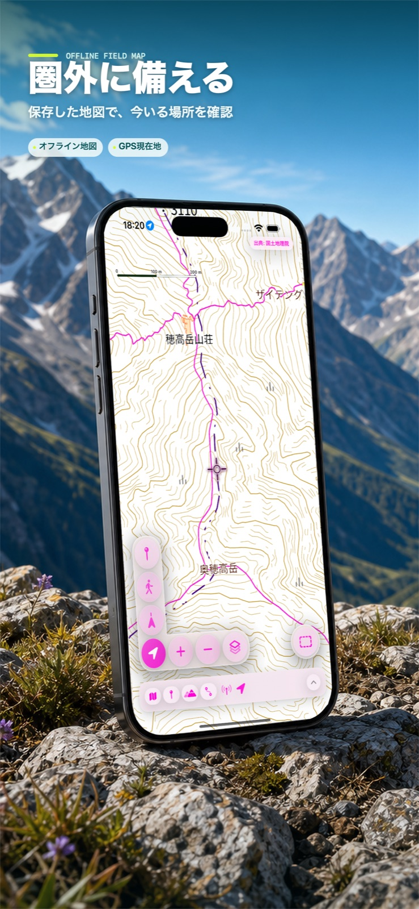
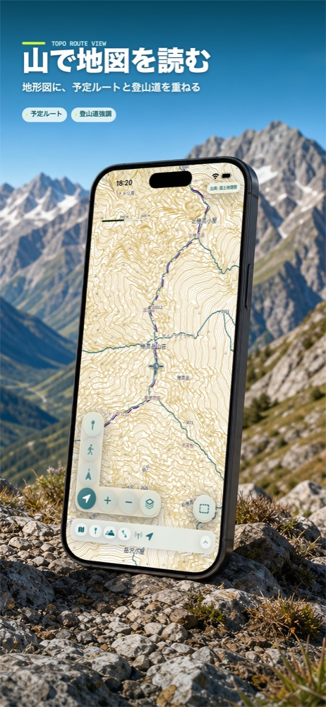
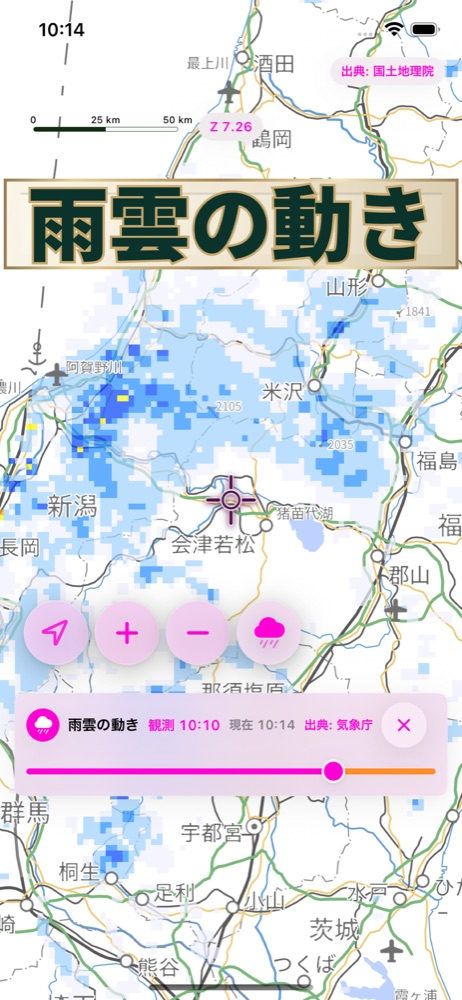

100 FAMOUS MOUNTAINS
百名山カードからルートを選ぶ
日本百名山の山カードから同梱ルートを選び、地形図と登山道に重ねて確認できます。自分の予定ルートやチェックポイントも地図上で管理できます。
百名山ルートを見る

APP STORE
登山前の地図準備をiPhoneで
保存した地図はオフラインで表示できます。雨雲の動きなど一部機能はオンライン専用です。
案内
本アプリは国土地理院や気象庁の公式アプリではありません。